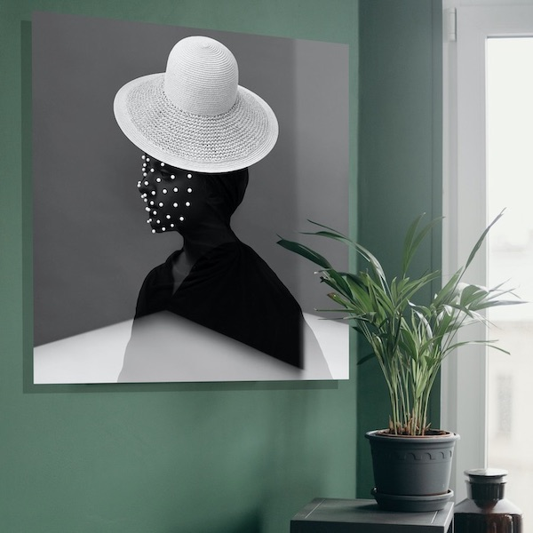
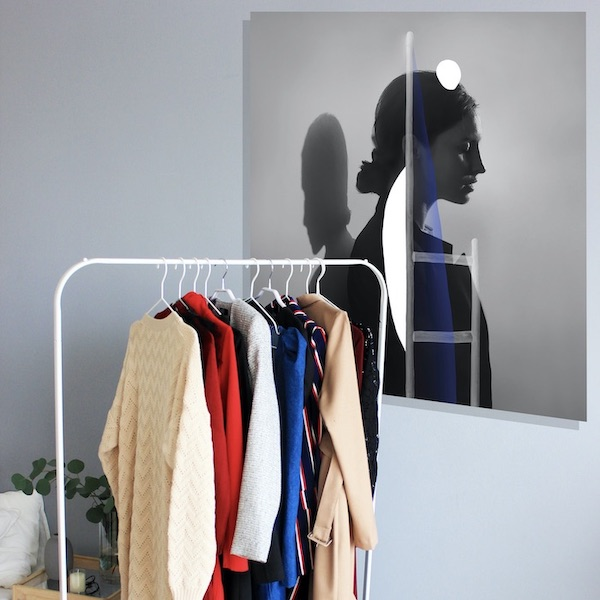
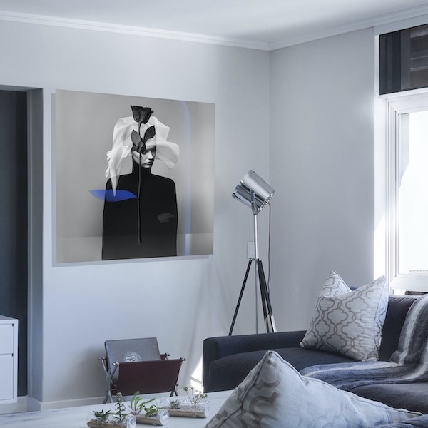
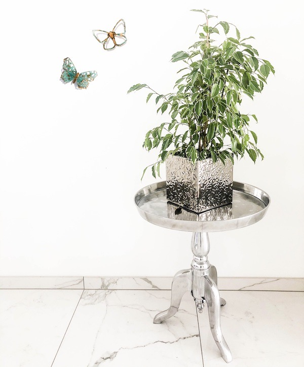
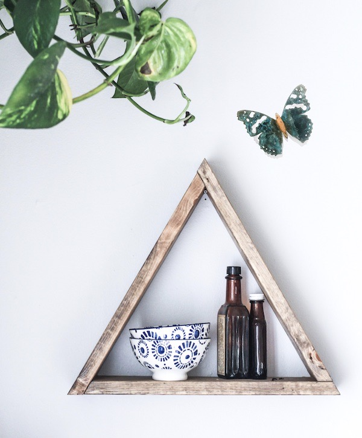
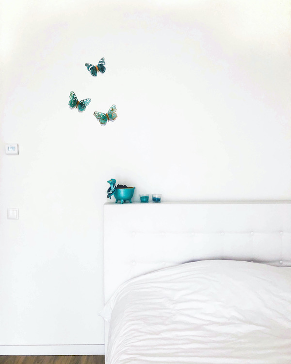
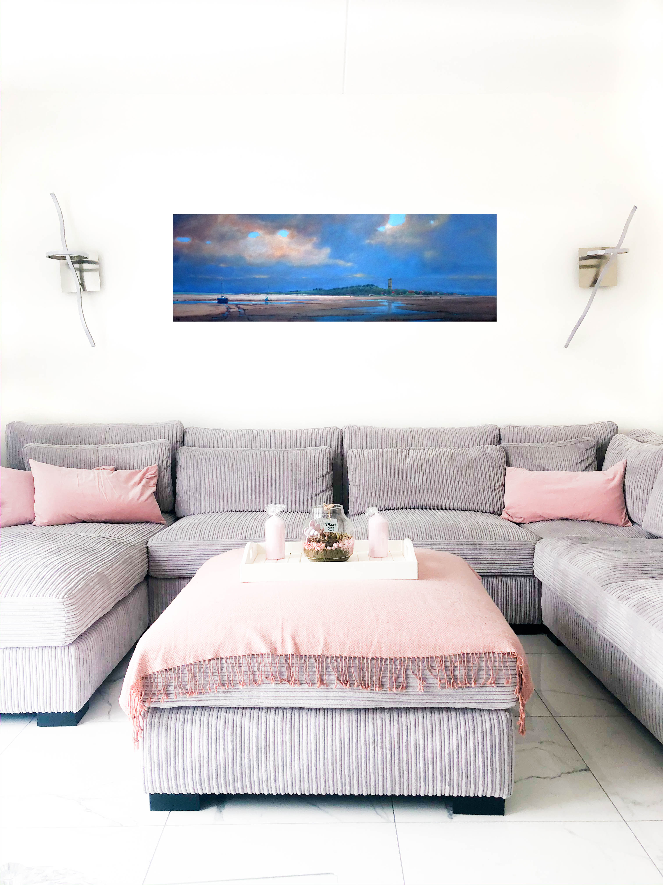
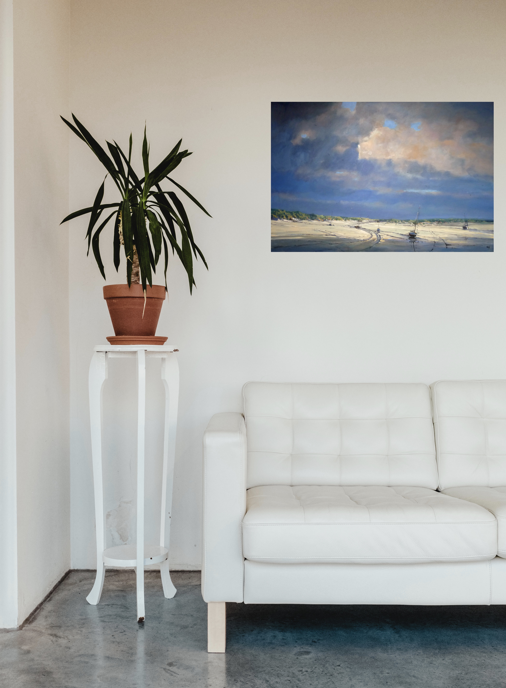
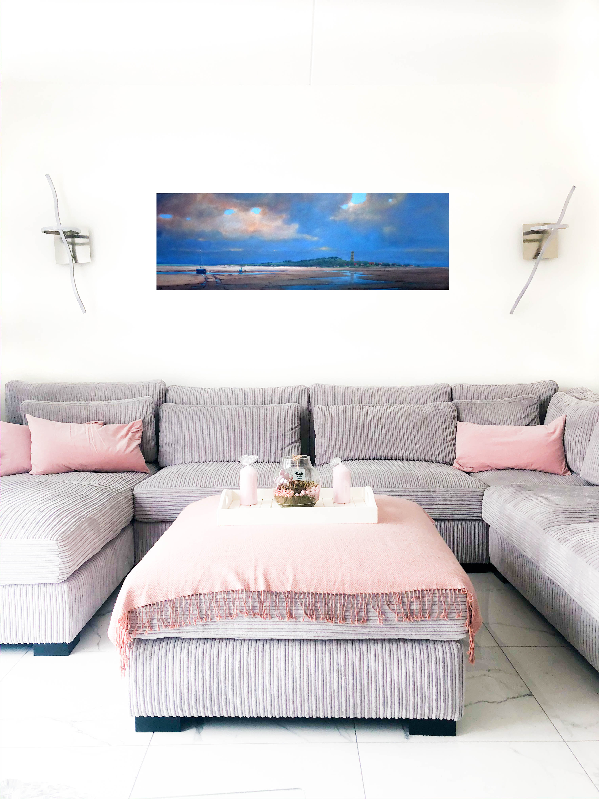
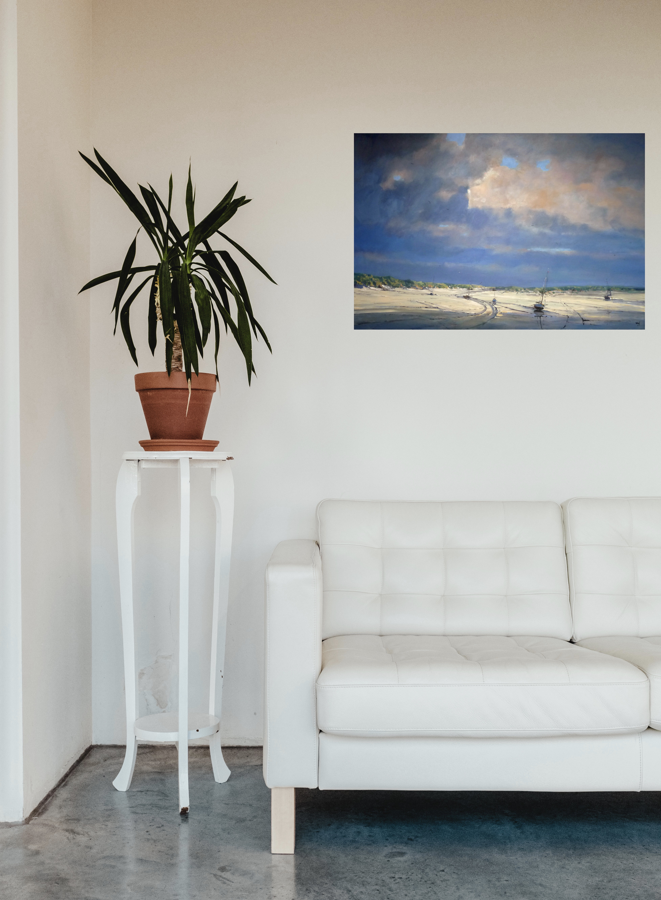

INTERIEURS
Jorg Karg
Doormiddel van fotografie en photoshop, maakt Jorg Karg de mooiste samengestelde beelden in plexiglas. Deze werken mocht ik photoshoppen in mijn eigen gestijlde interieur. Hierbij spelen vooral perspectief en shaduwen een grote rol. Alle werken zijn te koop in een galerie waar ik gewerkt heb.
  TweetFleet
De collectie van TweetFleet bestaat uit verschillende vlinders en vogels, mooi op te hangen in het interieur. Deze bestaan allemaal uit koper, wat uitgesneden is met een laser. Vervolgens bewerkt ik deze door middel van chemische producten en een brander. Ook de TweetFleets zijn te koop in een galerie waar ik gewerkt heb.
  Cees Vegh
De schilderijen van Cees Vegh zijn prachtige landschappen, voornamelijk de waddeneilanden in het speciaal. Ze zijn er in allerlei verschillende formaten, waardoor de prijzen erg verschillen. Deze werken heb ik gephotoshop in verschillende interieurs, net als die van Jorg Karg. Alle werken zijn te koop in een galerie waar ik gewerkt heb.
 


